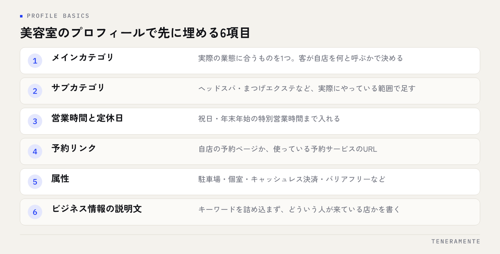

美容室やサロンの新規客は、ほとんどがスマートフォンで「地名＋美容室」と検索し、地図に並んだ数軒を見比べてから予約します。美容室のMEO対策で効くのは順位を上げる工作ではなく、見比べられている項目を埋めて、迷いを残さないことです。並んだ時点では、どの店も同じ大きさで表示されます。差がつくのは中身です。
📌 この記事の結論
先にやるのは「来店前に確かめられたいこと」をプロフィール上で全部答えておくことです。メニューと料金、店内の様子、駐車場、指名の有無、口コミの新しさ。この5つが埋まっていない店は、順位が高くても予約の前で止まります。
01美容室のMEO対策は、新規客が選ぶ基準に合わせる
はじめて行く美容室を選ぶとき、人が確かめているのは店の実力ではありません。確かめようがないからです。代わりに見ているのは、行ってみて失敗しないかどうかの手がかりです。
具体的には、料金がいくらかかるのか、自分の髪質や希望に対応しているのか、店の雰囲気が合いそうか、駐車場や駅からの距離に無理がないか、予約が取れそうか。このあたりが並んでいます。Googleマップの画面でこれが分からないと、分かる店に移ります。
ここを押さえずに「上位表示」だけを追うと、表示回数は増えても予約が増えない状態になります。MEO対策の作業量の大半は、検索のための工作ではなく、プロフィールを店の案内として完成させる作業だと考えてください。美容室は近隣に競合が密集する業種なので、同じ条件で並んだときに情報の抜けがそのまま差になります。
02プロフィールで先に埋める項目
Googleビジネスプロフィールには入力欄がたくさんありますが、美容室で先に効くものは限られています。順に埋めてください。

- メインカテゴリ：「美容院」「美容室」「理容室」「ネイルサロン」など、実際の業態に合うものを1つ。迷ったら、客が自分の店を何と呼ぶかで決めます
- サブカテゴリ：ヘアサロン以外に扱っているもの（ヘッドスパ、まつげエクステ、着付けなど）を実際にやっている範囲で足します
- 営業時間と定休日：祝日と年末年始の特別営業時間まで入れます。ここが空欄だと「開いているか分からない店」になります
- 予約リンク：自店の予約ページか、使っている予約サービスのURLを設定します
- 属性：駐車場、個室、キャッシュレス決済、バリアフリーなど、該当するものを選びます
- ビジネス情報の説明文：店の特徴を数行。キーワードを詰め込まず、どういう人が来ている店かが分かる文章にします
カテゴリの選び方で迷う場合はGoogleビジネスプロフィールのカテゴリの選び方に判断の手順をまとめています。店名は、店頭の看板や自店サイトで使っている正式名称のまま入れます。「◯◯市 美容室 カット」のようにキーワードを足すのはガイドライン違反で、修正や掲載停止につながります。
店名・住所・電話番号は、他の掲載先とそろえる
美容室は予約サイトやポータルにも登録していることが多く、そこでの表記とGoogleの表記がずれていることがあります。ビル名の省略、ハイフンの種類、「店」の付け方。細かい部分ですが、情報の確かさに関わります。考え方はNAP情報の統一に整理しています。
03メニューと料金を、来店前に分かる形にする
美容室で予約の前に止まる最大の理由は、料金が分からないことです。Googleビジネスプロフィールにはサービス（メニュー）を登録できるので、ここを使います。
入れるのは、新規客が最初に頼む可能性の高いメニューです。カット、カラー、パーマ、トリートメント、ヘッドスパ。全メニューを網羅する必要はありません。価格帯が分かる代表的なものが数点あれば、判断の材料になります。
書き方で差が出るのは、料金の前提です。カットの金額が書いてあっても、シャンプー・ブローが含まれるのか、学生料金があるのか、指名料が別途かかるのかで実際の支払いは変わります。ここを一行で添えておくと、来店後のすれ違いも減ります。
| 書く項目 | 書いておく理由 |
|---|---|
| メニュー名と料金 | 価格帯が分からないと比較の土台に乗らない |
| 料金に含まれるもの | シャンプー・ブロー込みかどうかで印象が変わる |
| 所要時間の目安 | 予定を組んでから予約する人が多い |
| 指名料・初回料金の有無 | 来店後の金額のずれを防ぐ |
| 対応していない施術 | 無理な予約と、低評価の原因を先に減らす |
最後の項目は見落としやすい部分です。縮毛矯正やブリーチを扱っていない、着付けは受けていない、といった「やっていないこと」を書いておくと、合わない予約が減ります。断ることになった予約は、店にも客にも損失です。
04写真は、スタイル写真より先に店内を
美容室の写真は作品（スタイル写真）を並べたくなりますが、新規客が先に見たいのは店そのものです。はじめて行く店で不安なのは、仕上がりよりも場所と雰囲気だからです。
優先順位は次のとおりです。
- 外観：建物と入口。看板が写っていて、歩いていて見つけられる状態が分かること
- 入口から店内に入ったところ：扉を開けたらどうなっているか
- セット面：席の間隔、個室か、ついたてがあるか
- シャンプー台・待合
- 駐車場・駐輪場：入れ方が分かる角度で
- スタッフ：顔出しが可能な範囲で
- スタイル写真：ここで作品を
スタイル写真は数を増やしても情報量が増えません。同じ角度の仕上がり写真を並べるより、店内の様子が一通り分かるほうが予約につながります。写真は明るい時間に撮り、加工は色味をそろえる程度にとどめます。実際と違う印象になると、来店時の落差が低評価の原因になります。
05口コミは、件数より新しさと返信
美容室は口コミが集まりやすい業種なので、件数競争になりがちです。ただ、見る側は件数だけを見ていません。いつ書かれたか、どういう内容か、店が返信しているかを見ています。
- 新しさ：半年前の口コミで止まっている店は、いま続いているのか分かりません。直近に数件あることが大事です
- 内容の幅：「よかった」だけの短文が並ぶより、何がよかったかが書かれているほうが参考になります
- 返信：返信があると、店が見ていることが伝わります
依頼のしかたには線引きがあります。来店後に「よかったら感想を書いてください」と伝えるのは問題ありませんが、割引や特典と引き換えに依頼するのはガイドライン違反です。集め方の実務はGoogle口コミを増やすにまとめています。
低評価が付いたときは、消すことを考える前に返信を考えます。美容室の低評価は仕上がりへの不満だけでなく、待ち時間や会話の量といった接客面のものが多く、ここは返信の内容で印象が変わります。対応の判断基準は低評価の口コミへの対応手順が目安になります。
返信は、書いた人へ向けた文章でありながら、これから来る人が読む文章でもあります。
06投稿とQ&Aで、来店前の不安を消す
投稿（Googleビジネスプロフィールの更新）とQ&Aは、埋めている店が少ない部分です。ここは手を付けると差が出ます。
投稿に出す内容は、宣伝よりも案内が向きます。季節のメニュー、空いている曜日や時間帯、臨時休業、新しく入ったスタッフ。「今週の木曜は夕方が空いています」のような情報は、いますぐ予約したい人に直接効きます。ネタが続かない場合の考え方はGoogleビジネスプロフィールの投稿ネタにまとめています。
Q&Aは、店側から質問と回答を登録できます。実際に電話で聞かれていることをそのまま入れてください。
- 予約なしでも入れますか
- 子ども連れでも大丈夫ですか
- 駐車場はどこに停めればいいですか
- 支払いにクレジットカードは使えますか
- 髪が傷んでいるのですが相談できますか
電話で聞かれる質問は、わざわざ聞かずに候補から外した人も同じことを気にしていると考えてよい部分です。先に答えを置いておくと、その分だけ予約の手前の離脱が減ります。
07月1回の確認と、動かないときの見方
プロフィールを埋め終わったら、月1回だけ見る日を決めます。項目を固定するのが大事です。
| 見る項目 | 確かめ方 |
|---|---|
| 営業時間 | 翌月の祝日・特別営業時間が入っているか |
| 未返信の口コミ | 返信していないものが残っていないか |
| 写真 | 改装・模様替えのあと、古い写真が残っていないか |
| メニューと料金 | 改定した内容が反映されているか |
| 投稿 | 先月、決めた回数を出せているか |
| オーナー確認の状態 | 担当スタッフの退職で権限が外れていないか |
数字は管理画面で、表示回数・ルート検索・電話・予約リンクへの遷移を見ます。見るときの注意は、他店と大小を比べないことです。駅前と住宅街では周辺の検索数そのものが違います。比べるのは前月の自店と、表示回数に対する行動の比率です。
表示はされているのに電話や予約が少ない場合、原因は順位ではなく中身にあります。料金が分からない、写真が古い、口コミが止まっている。この記事の前半の項目に、たいてい当てはまるものがあります。順位が動かないときに確認する順番はGoogleマップの順位が急に下がった原因と確認手順が土台になります。
効果は数週間では判断しない
プロフィールを整えてから数字が動くまでには時間がかかります。1〜2週間で判断して、カテゴリや店名をいじり始めると、何が効いたのか分からなくなります。変更は一度に1か所、記録を残して、月単位で見てください。期間の目安はMEO対策の効果が出るまでの期間に整理しています。
スタッフごとにプロフィールを作ることはできますか？
予約サイトに登録していれば、MEO対策は不要ですか？
口コミが少ないうちから上位に出ることはありますか？
08まとめ：順位より、来店前の疑問を先に消す
美容室・サロンのMEO対策は、特別な技術ではありません。新規客が来店前に確かめたいこと――料金、店の中、駐車場、口コミの新しさ――をプロフィール上で先に答えておく作業です。写真はスタイル写真より店内を先に、口コミは件数より新しさと返信を優先する。この順番だけで、並んだときの見え方が変わります。
そして月1回、同じ項目で確認する。数字は他店と比べず、前月の自店と、表示から行動への比率で読む。変更は一度に1か所にして、何が効いたか分かる形で進めてください。
TENERAMENTEでは、プロフィールの初期整備から月次の確認までを店舗で続けられる形に落とすところからお手伝いしています。進め方はMEO対策のページにまとめていますので、どこから手を付けるか迷っている場合はお問い合わせよりお気軽にご相談ください。